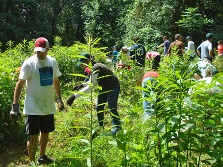
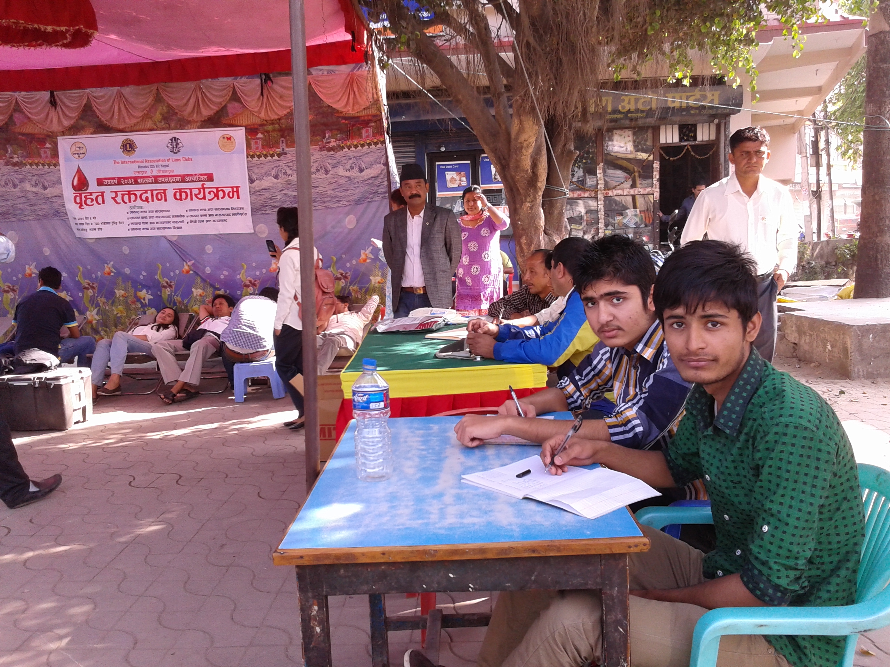
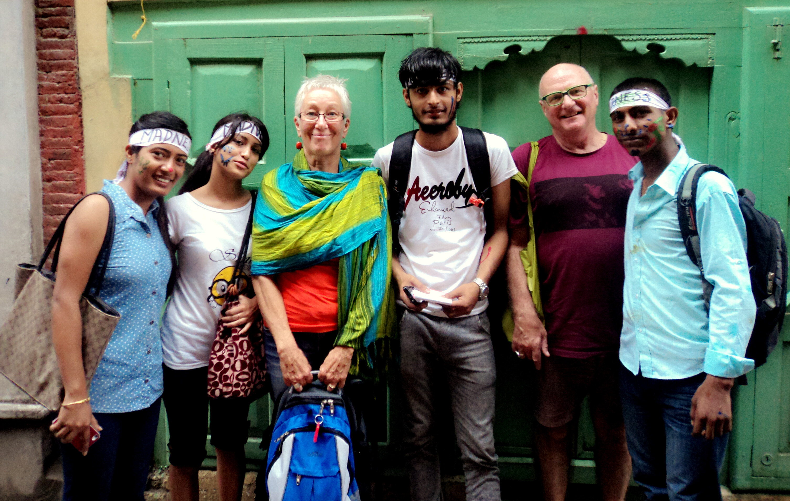

Volunteering Through EarthShare
Recent surveys indicate that a high percentage of employees want to get involved in their employer's cause related efforts through paid time off to volunteer; information about volunteer opportunities outside of work; and company sponsored volunteer days. EarthShare helps employer partners create these opportunities by developing enriching volunteer events and programs.
Our Volunteer Matters 365 widget (below) will connect you with volunteer opportunities offered by EarthShare member charities and state affiliates across the country. We provide company-branded versions of this widget at no cost to our workplace partners ......
Right Charity and Maximize Donations
An important aspect of having well-rounded finances is charity. Giving is generally accepted by many personal finance experts as an essential part of good money management.Information about volunteer opportunities outside of work; and company sponsored volunteer days.
Your giving, however, should be like other aspects of your Right Charity and Maximize Donations financial management—an effort should be made to ensure that you are getting the best.....

Improve your own health and happiness!
9/11/2014 - Giving opens the door to the future, inviting in new feelings of purpose and connectivity. Giving prepares the way for a more compassionate world, especially when the giving and receiving is done with a good heart.
A gift can lift the burdens of both the receiver and the giver, empowering both with........
What Should I Know Before I Change Careers?
Volunteer can help each other. A true volunteer is someone who lets you have total freedom to be yourself - and especially to feel. Or, not feel.
Whatever you happen to be feeling at the moment is fine with them. That's what real volunteering amounts to - letting a person be what he really is........